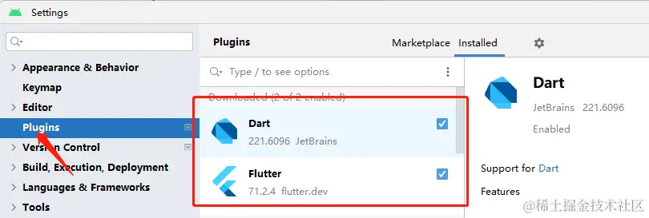

- 01 前言-教程内容导读.md.html
- 02 Flutter 开发环境的搭建.md.html
- 03 新手村基础 Dart 语法 (上).md.html
- 04 新手村基础 Dart 语法 (下).md.html
- 05 Flutter 计数器项目解读.md.html
- 06 猜数字界面交互与需求分析.md.html
- 07 使用组件构建静态界面.md.html
- 08 状态数据与界面更新.md.html
- 09 校验结果与提示信息.md.html
- 10 动画使用与状态周期.md.html
- 11 猜数字整理与总结.md.html
- 12 电子木鱼界面交互与需求分析.md.html
- 13 电子木鱼静态界面构建.md.html
- 14 计数变化与音效播放.md.html
- 15 弹出选项与切换状态.md.html
- 16 用滑动列表展示记录.md.html
- 17 电子木鱼整理与总结.md.html
- 18 白板绘制界面交互与需求分析.md.html
- 19 认识自定义绘制组件.md.html
- 20 通过手势在白板上绘制.md.html
- 21 白板画笔的参数设置.md.html
- 22 撤销功能与画板优化.md.html
- 23 应用界面整合.md.html
- 24 数据的持久化存储.md.html
- 25 网络数据的访问.md.html
- 26 教程总结与展望.md.html
- 捐赠
02 Flutter 开发环境的搭建
如果你已经有了 Flutter 的开发环境，可以跳过本篇。先声明一点： Flutter 虽然可以开发 Windows、Linux、Macos、Android、iOS 、web 六大主流平台的应用程序。但作为初学者，最好先在一端上学习 Flutter 的基础知识，不用过分追逐在每个平台上都跑一遍。
对于编程的新手朋友，我比较建议先在 Android 平台学习，首先 Android 真机设备或模拟器的门槛比较低，只需要一个 windows 电脑就可以了，而 iOS 应用需要 Mac 笔记本才能开发；其次，安卓的应用可以直接打包分享给别人用，iOS 则比较复杂；最后，移动端要比桌面端成熟一些，并不建议新手一开始从桌面端应用来学习 Flutter 。
当然，如果你以前是做 iOS 开发的，或者手上有 Mac 笔记本、iOS 真机，也可以选择通过 iOS 应用来学习。对于入门级别的 Flutter 知识来说，各个平台没有什么大的差异，所以不用过于纠结。
对于新手而言，开发环境搭建是一个非常大的坎，特别是跨平台的技术，涉及面比较广。我以前在 bilibili 发表过几个视频，介绍 Flutter 在各个平台开发应用的环境搭建。不想看文章或者是看文章无法理解的朋友，可以根据视频中的操作来搭建开发环境，尽可能降低门槛。
(主要) Flutter 全平台开发环境 | SDK 和 开发工具 (主要) Flutter 全平台开发环境 | Android 设备运行项目 (选看) Flutter 全平台开发环境 | Window 平台桌面应用 (选看) Flutter 全平台开发环境 | iOS/macOS 平台应用
在介绍 Flutter 开发环境之前，先打个比方：如果说编写应用程序是在做一道 麻婆豆腐；Flutter 环境本身相当于 原材料 ，提供应用中需要的素材。但只有原材料是不足以做出一道菜的，还需要厨具进行烹调，厨具就相当于 IDE (集成开发环境)，也就是编辑代码和调试的工具。最后，才是盛到盘子里，给用户品尝。
1. FlutterSDK 的下载与安装
对于 Flutter 本身而言，最重要的是下载 FlutterSDK ，地址如下：
根据计算机的操作系统，选择最新稳定版的文件，比如现在最新版是 3.7.10 ，点击一下版本号就下载压缩包。这里以 Windows 操作系统为例：
下载完后，解压到一个文件夹下：
为了可以在计算机的任何地方都可以访问 flutter 提供的可执行文件，一般都会将 flutter\bin 文件夹路径配置到 Path 环境变量中。如下所示，红框中的路径和上一步解压的路径有关：
注: 如果不会配置环境变量，可以参考上面第一个视频中的操作，或自己搜索解决。
另外，由于网络原因，可能国外网站的依赖难以下载，可以顺便在系统变量中配置官方提供的国内镜像，第一个视频中也有介绍操作方式。
PUB_HOSTED_URL=https://pub.flutter-io.cn
FLUTTER_STORAGE_BASE_URL=https://storage.flutter-io.cn
如果在命令行中执行 flutter --version，能给出结果，说明 Flutter 环境没有问题。这时烹饪的材料就已经准备好了，接下来看看怎么拿到厨具。
2. IDE 开发工具的准备
对于一道菜来说，用什么厨具并不重要，重要的是如何把菜做好。有人喜欢用大锅，有人喜欢用小锅，个人偏好没有什么值得争吵的，工具最重要的是自己用着 趁手。 对于开发工具而言，我个人比较推荐 AndroidStudio ，因为：
- AndroidStudio 的调试功能非常强大，也方便查阅源码
- AndroidStudio 方便管理和下载 AndroidSDK，可以创建安卓模拟器
- AndroidStudio 是 Android 的官方开发工具，对 Android 开发比较友好
如果不喜欢 AndroidStudio，也可以自己选择其他的开发工具，比如 VSCode 等
AndroidStudio 下载地址如下：
下载完后运行安装包，一直下一步即可。首次安装时，会引导你下载 AndroidSDK，在接受之后进行下载：
最后，在 Settings/Plugins 中安装 Dart 和 Flutter 插件，即可完成开发工具的准备工作。如果有什么不清楚的，可以参考上面的第一个视频。

3. 创建 Flutter 项目
安装完插件之后，重启 AndroidStudio，在新建项目时会有创建 Flutter 项目的选项。红框中选择 Flutter SDK 的路径位置：
在下一步中，填写应用的基本信息：
然后，就会创建出 Flutter 默认的计数器项目，这个小项目将在下一节进行分析。接下来看一下如何将项目运行到 Android 设备中。
4. Android 模拟器创建与运行项目
Flutter 全平台开发环境 | Android 设备运行项目 视频中介绍了 Android 模拟器的创建过程，这里简单说一下要点。首先，最好在环境变量中添加一个 ANDROID_HOME 的环境变量，值为 Android SDK 下载的目录：
在 AndroidStudio 上栏图标中找到如下设备管理器，点击 Create device 创建设备：
选择一个你觉得合适的手机尺寸：
另外最好在 New Hardware Profile 中将 RAM 调大一些，否则可能在运行时内存不足，程序安装不上：
然后选择下载镜像，一般都选最高版本：
最后，模拟器创建完成，点击运行：
要将项目运行到手机中，点击上面菜单栏的小三角按钮即可：
项目运行之后，可以看到模拟器上展示了一个计数器应用，随着点击右下角的按钮，中间的数字会进行自加。这就是默认的计数器项目。
| 项目运行 | 点击加号 |
|---|---|
到这里 Flutter 的开发环境就已经搭建完成，其他平台应用的开发环境基本上类似，如有需要可以参考视频中的操作。本篇到这里就告一段落，巧妇难为无米之炊，在介绍计数器项目之前，有必要先简单了解一下 Dart 的基础语法，你才有使用代码完成逻辑的能力。
5.本章小结
到这里 Flutter 的开发环境就已经搭建完成，这里主要以 Android 应用开发的视角对 Flutter 框架进行学习。开发其他平台应用的开发环境基本上类似，如有需要可以参考视频中的操作。对于初学者而言，建议在起初专注在某一个平台中，学习 Flutter 基础知识，这些基础知识是全平台通用的。
本篇到这里就告一段落，如果把应用开发比作烹饪一席晚宴，那么环境搭建就相当于准备炊具和食材。其中编辑器是应用开发的炊具； Flutter SDK 中提供的 Dart 语法、类型体系就是食材。正所谓巧妇难为无米之炊，在介绍计数器项目之前，有必要先简单了解一下 Dart 的基础语法，你才有使用代码完成逻辑的能力。
© 2019 - 2023 Liangliang Lee. Powered by gin and hexo-theme-book.